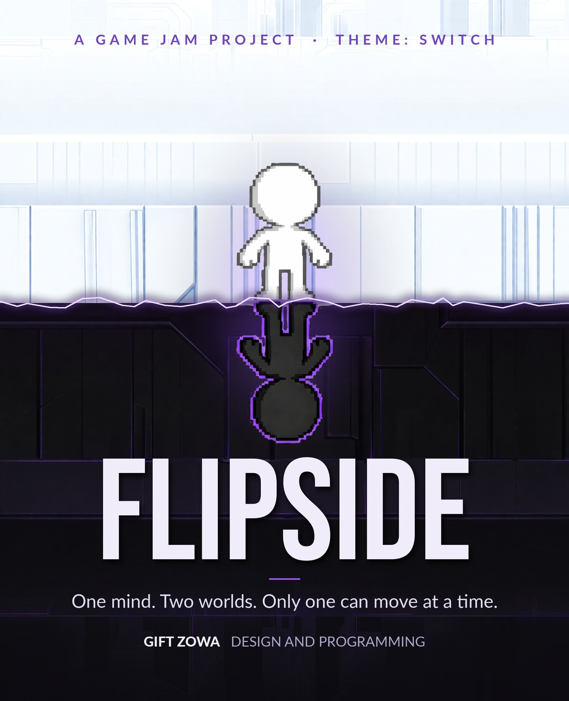
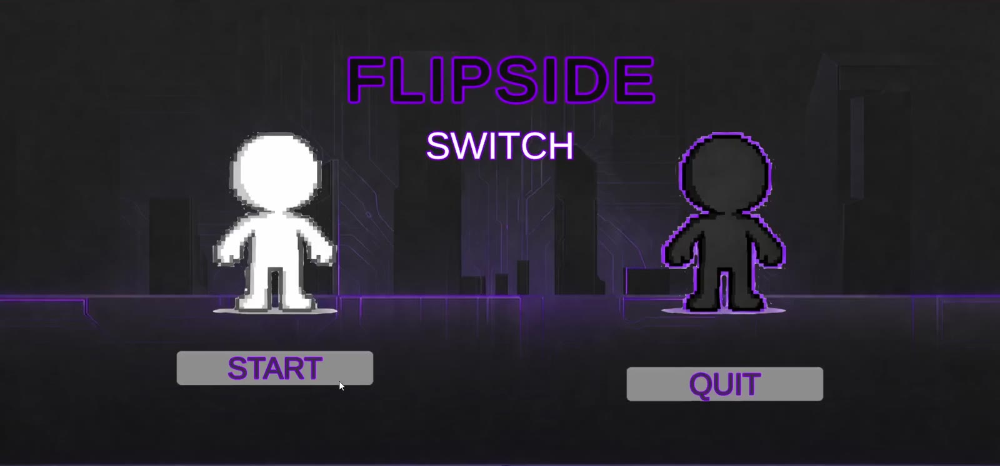
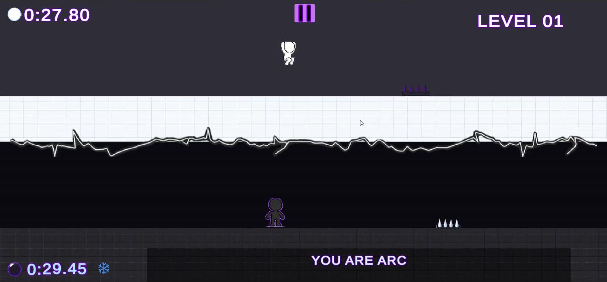
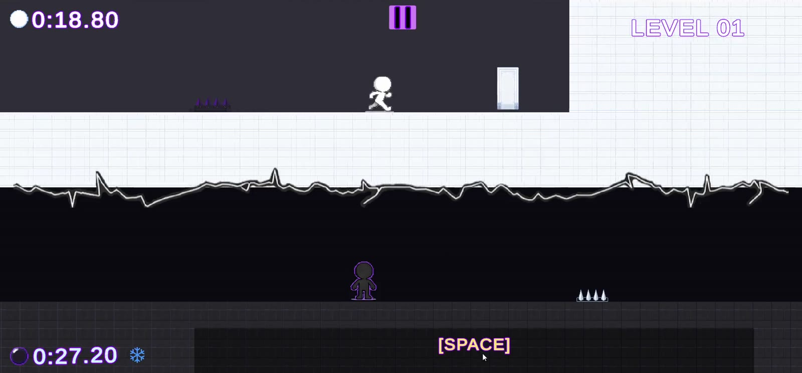
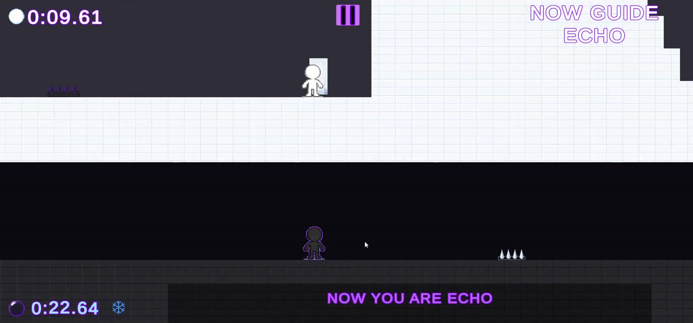
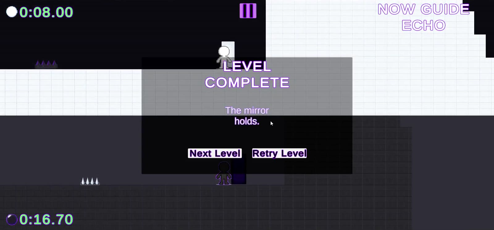
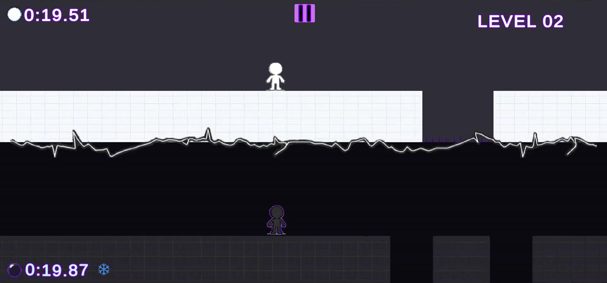
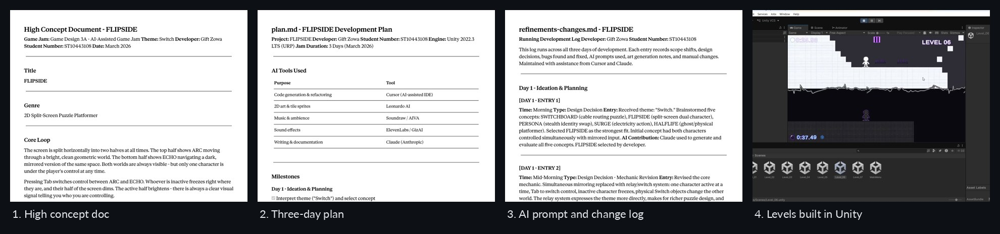
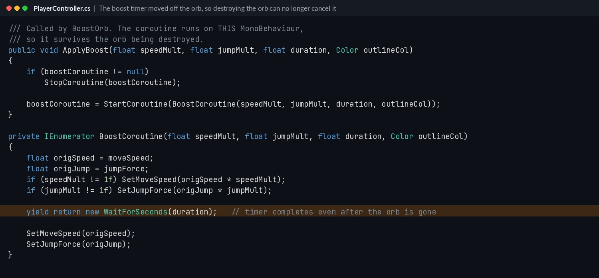

FLIPSIDE
One mind. Two worlds. Only one can move at a time.
Windows build on itch.io. Unzip and run FLIPSIDE.exe.
The game
The screen is split in two. ARC lives in a bright, clean world at the top. ECHO lives in its dark mirror below. Only one of them can move at a time. Press Tab and the other one freezes while you take over. A switch hit by ARC can raise a platform for ECHO, and ECHO can switch off a hazard in ARC's path. Neither can finish alone.
Single-player 2D puzzle platformer for Windows PC. Each character has a countdown timer. The active one drains at full speed and the frozen one at a quarter speed, so every switch is a decision. 7 levels.
The brief
A solo three-day game jam for Game Design 3A, on the theme "Switch".
Credits
- Gift Zowa · Design, programming and level design
- Came up with the concept and changed the core mechanic after playtesting. The first version had both characters move at once with mirrored input. It sounded good on paper but felt frustrating to play, so I switched to one character at a time with Tab.
- Designed the theme on three levels: you hit switches, you switch characters, and each world is a switched version of the other.
- Built the dual timer system, the Boost Orbs (one character collects, the other gets the boost) and the switches that change the other world.
- Designed and built all 7 levels in the Tilemap editor, from a flat tutorial to a final level that uses every mechanic under timer pressure.
- Found and fixed a bug in the Boost Orb code through playtesting (see below).
What I used on this project.
Screenshots






How it was made

